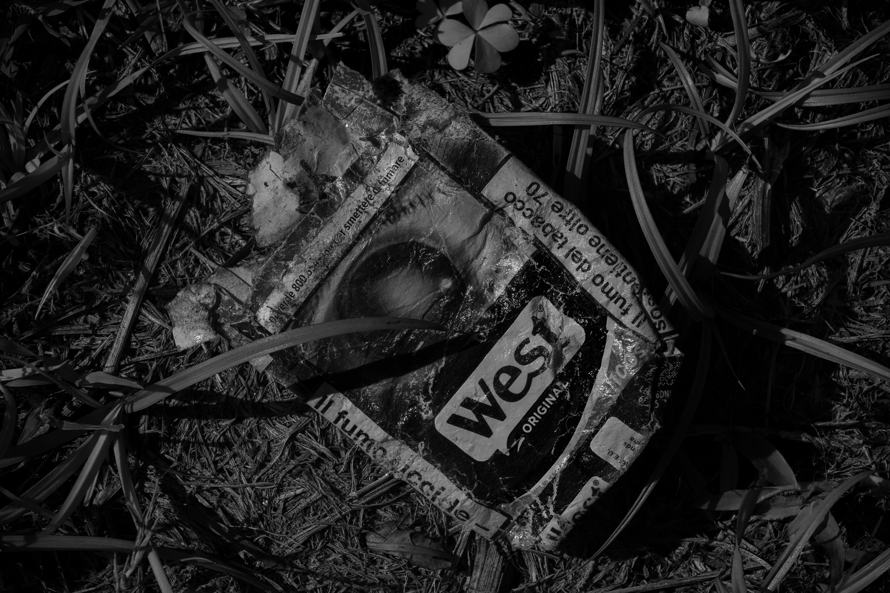
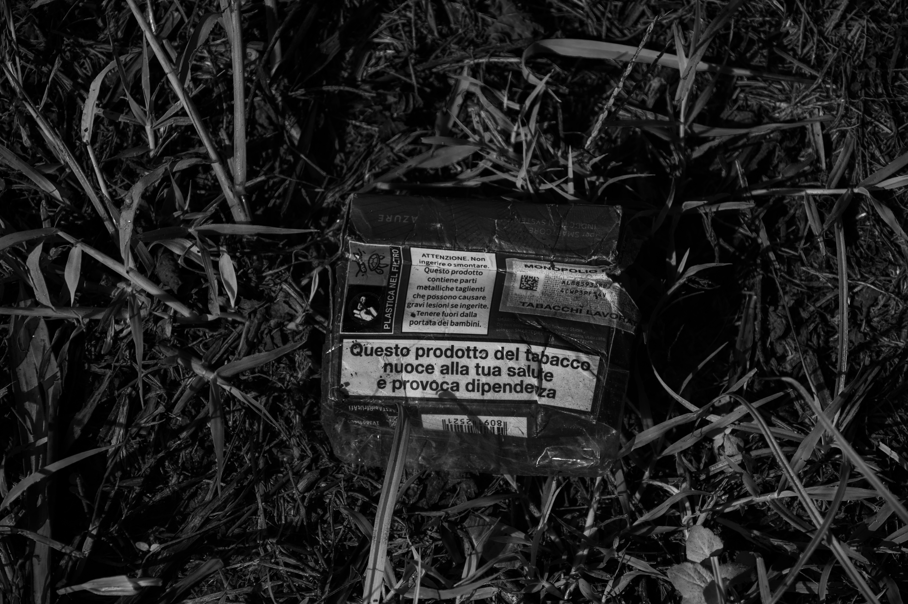
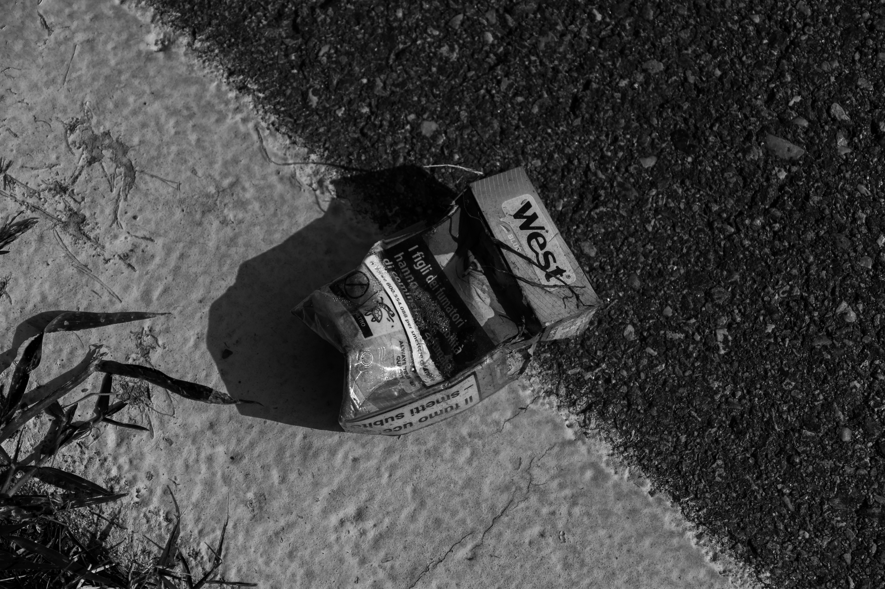
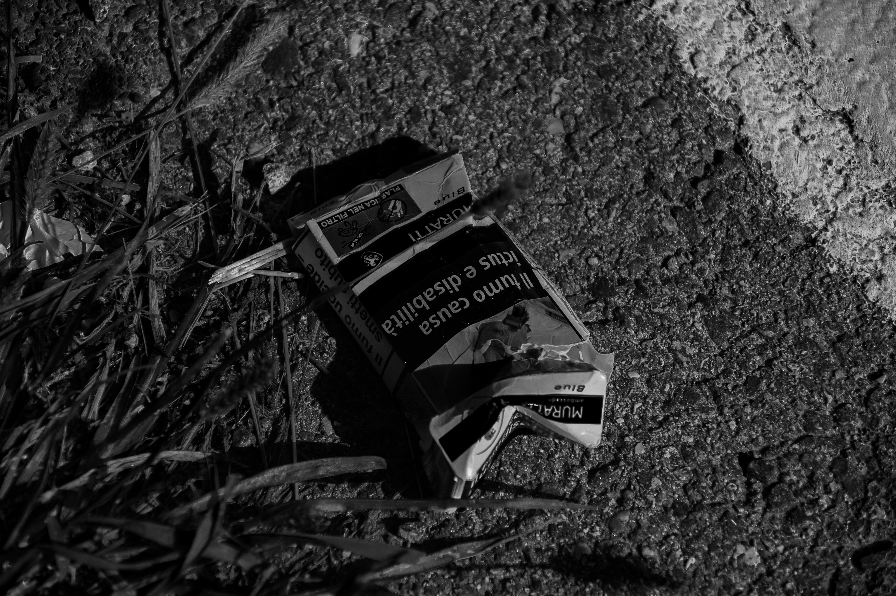
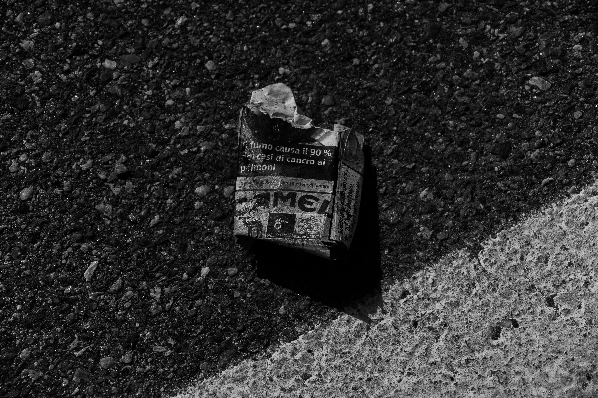
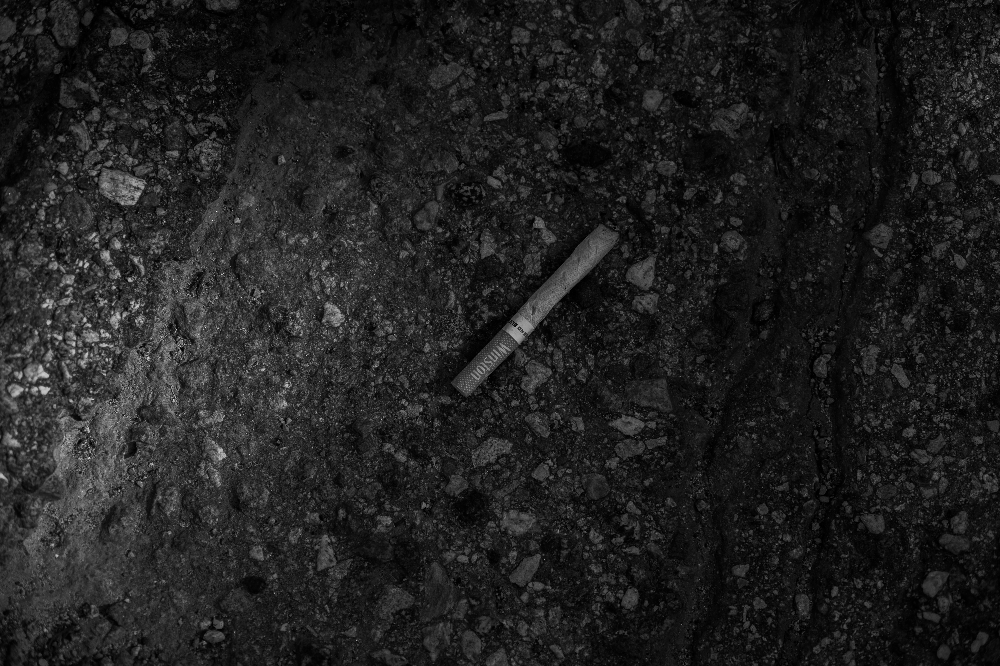
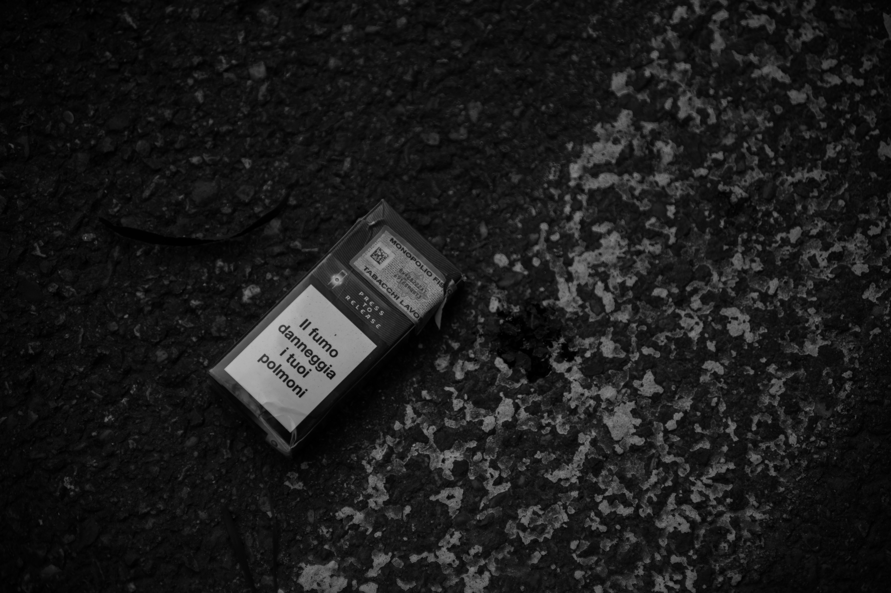

Cripped

A crushed West cigarette packet lies among grass and clover.

A discarded cigarette pack rests in the grass, its Italian health warning visible.

A crushed West cigarette packet lies at the boundary between concrete and asphalt.

A crushed cigarette packet lies across the edge of grass and pavement.

A torn cigarette packet casts a hard shadow across the asphalt.

A cigarette butt sits on coarse asphalt.

A crushed cigarette packet lies on rough pavement beside grass.